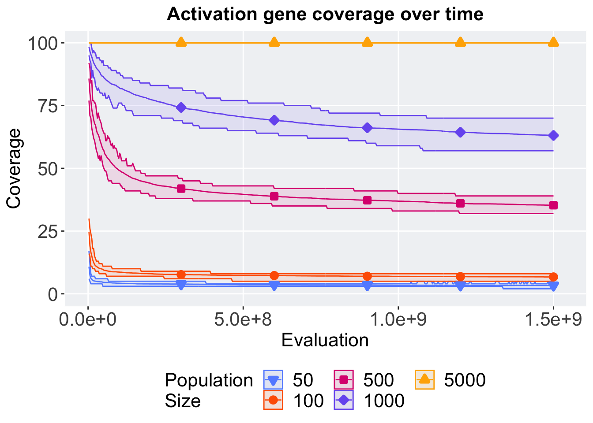

Chapter 6 Contradictory objectives 300 results
Here we report the activation gene coverage and satisfactory trait coverage was found on the contradictory objectives diagnostic. 50 replicates were conducted for each population size explored. Activation gene coverage is calculated by finding all the unique activation genes found within a given population. Satisfactory trait coverage is calculated by finding all the unique satisfactory traits found within a given population.
6.1 Analysis setup
library(ggplot2)
library(cowplot)
library(dplyr)
library(PupillometryR)
# over time data
over_time <- read.csv("../Paper_Data/Contradictory-300/ot.csv", header = TRUE, stringsAsFactors = FALSE)
over_time$pop_size <- factor(over_time$pop_size, levels = NAMES)
# best performance data
best <- read.csv('../Paper_Data/Contradictory-300/best.csv', header = TRUE, stringsAsFactors = FALSE)
best$pop_size <- factor(best$pop_size, levels = NAMES)6.2 Activation gene coverage
6.2.1 Coverage over time
Performance of the best solution in the population at each generation over time.
# aggregate
lines = filter(over_time,eval != 0) %>%
group_by(pop_size, eval) %>%
dplyr::summarise(
min = min(activation_coverage),
mean = mean(activation_coverage),
max = max(activation_coverage)
)
lines$pop_size <- factor(lines$pop_size, levels = NAMES)
ggplot(lines, aes(x=eval, y=mean, group = pop_size, fill = pop_size, color = pop_size, shape = pop_size)) +
geom_ribbon(aes(ymin = min, ymax = max), alpha = 0.1) +
geom_line(linewidth = 0.5) +
geom_point(data = filter(lines, eval %% 100000000 == 0 & eval != 0), size = 1.0, stroke = 2.0, alpha = 1.0) +
scale_y_continuous(
name="Coverage",
limits=c(0, 100),
breaks=seq(0,100, 25),
labels=c("0", "25", "50", "75", "100")
) +
scale_x_continuous(
name="Evaluation",
labels = c('0.0e+0', '5.0e+8','1.0e+9','1.5e+9'),
limits = c(0,1530000000)
) +
scale_shape_manual(values=SHAPE)+
scale_colour_manual(values = cb_palette) +
scale_fill_manual(values = cb_palette) +
ggtitle('Activation gene coverage over time')+
p_theme +
guides(
shape=guide_legend(nrow=2, title.position = "left", title = 'Population\nSize'),
color=guide_legend(nrow=2, title.position = "left", title = 'Population\nSize'),
fill=guide_legend(nrow=2, title.position = "left", title = 'Population\nSize')
)
6.3 Satisfactory trait coverage
6.3.1 Coverage over time
Satisfactory trait coverage over time.
# aggregate
lines = over_time %>%
group_by(pop_size, eval) %>%
dplyr::summarise(
min = min(satisfactory_coverage),
mean = mean(satisfactory_coverage),
max = max(satisfactory_coverage)
)
lines$pop_size <- factor(lines$pop_size, levels = NAMES)
ggplot(lines, aes(x=eval, y=mean, group = pop_size, fill = pop_size, color = pop_size, shape = pop_size)) +
geom_ribbon(aes(ymin = min, ymax = max), alpha = 0.1) +
geom_line(linewidth = 0.5) +
geom_point(data = filter(lines, eval %% 100000000 == 0 & eval != 0), size = 1.0, stroke = 2.0, alpha = 1.0) +
scale_y_continuous(
name="Coverage",
limits=c(0, 75),
breaks=seq(0,75, 25),
labels=c("0", "25", "50", "75")
) +
scale_x_continuous(
name="Evaluation",
labels = c('0.0e+0', '5.0e+8','1.0e+9','1.5e+9'),
limits = c(0,1530000000)
) +
scale_shape_manual(values=SHAPE)+
scale_colour_manual(values = cb_palette) +
scale_fill_manual(values = cb_palette) +
ggtitle('Satisfactory trait coverage over time')+
p_theme +
guides(
shape=guide_legend(nrow=2, title.position = "left", title = 'Population\nSize'),
color=guide_legend(nrow=2, title.position = "left", title = 'Population\nSize'),
fill=guide_legend(nrow=2, title.position = "left", title = 'Population\nSize')
)6.3.2 Best satisfactory trait coverage found throughout run
Satisfactory trait coverage of the best population found throughout an evolutionary run.
ggplot(best, aes(x = pop_size, y = coverage, color = pop_size, fill = pop_size, shape = pop_size)) +
geom_flat_violin(position = position_nudge(x = .1, y = 0), scale = 'width', alpha = 0.2, width = 1.5) +
geom_boxplot(color = 'black', width = .07, outlier.shape = NA, alpha = 0.0, size = 1.0, position = position_nudge(x = .16, y = 0)) +
geom_point(position = position_jitter(width = 0.02, height = 0.0001), size = 1.5, alpha = 1.0) +
scale_y_continuous(
name="Coverage",
limits=c(0, 75),
breaks=seq(0,75, 25),
labels=c("0", "25", "50", "75")
) +
scale_x_discrete(
name="Population Size"
)+
scale_shape_manual(values=SHAPE)+
scale_colour_manual(values = cb_palette, ) +
scale_fill_manual(values = cb_palette) +
ggtitle('Best satisfactory coverage')+
p_theme + coord_flip() +
guides(
shape=guide_legend(nrow=2, title.position = "left", title = 'Population\nSize'),
color=guide_legend(nrow=2, title.position = "left", title = 'Population\nSize'),
fill=guide_legend(nrow=2, title.position = "left", title = 'Population\nSize')
)6.3.2.1 Summary statistics
best %>%
group_by(pop_size) %>%
dplyr::summarise(
count = n(),
na_cnt = sum(is.na(coverage)),
min = min(coverage, na.rm = TRUE),
median = median(coverage, na.rm = TRUE),
mean = mean(coverage, na.rm = TRUE),
max = max(coverage, na.rm = TRUE),
IQR = IQR(coverage, na.rm = TRUE)
)## # A tibble: 5 × 8
## pop_size count na_cnt min median mean max IQR
## <fct> <int> <int> <int> <dbl> <dbl> <int> <dbl>
## 1 50 50 0 3 4.5 4.46 5 1
## 2 100 50 0 7 8 8.3 10 1
## 3 500 50 0 35 38 38.1 42 2
## 4 1000 50 0 57 63 63.0 70 4
## 5 5000 50 0 59 67 67.5 74 5.756.3.2.2 Kruskal-Wallis test
##
## Kruskal-Wallis rank sum test
##
## data: coverage by pop_size
## Kruskal-Wallis chi-squared = 233.56, df = 4, p-value < 2.2e-166.3.2.3 Pairwise wilcoxon test
pairwise.wilcox.test(x = best$coverage, g = best$pop_size, p.adjust.method = "bonferroni",
paired = FALSE, conf.int = FALSE, alternative = 'g')##
## Pairwise comparisons using Wilcoxon rank sum test with continuity correction
##
## data: best$coverage and best$pop_size
##
## 50 100 500 1000
## 100 < 2e-16 - - -
## 500 < 2e-16 < 2e-16 - -
## 1000 < 2e-16 < 2e-16 < 2e-16 -
## 5000 < 2e-16 < 2e-16 < 2e-16 2.3e-08
##
## P value adjustment method: bonferroni